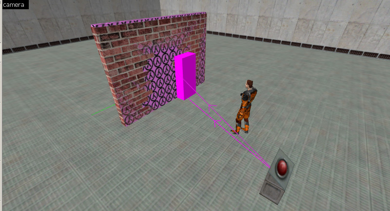
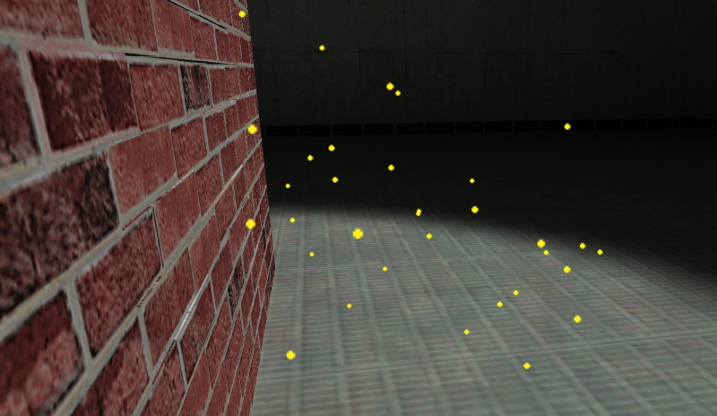
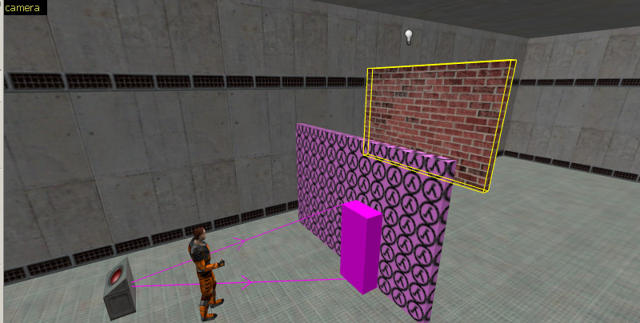
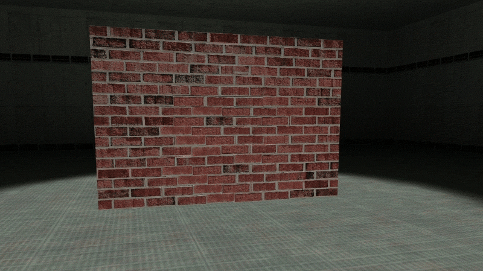
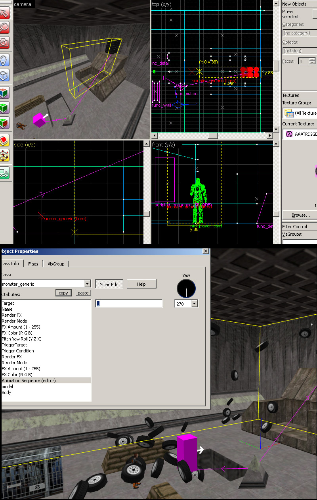
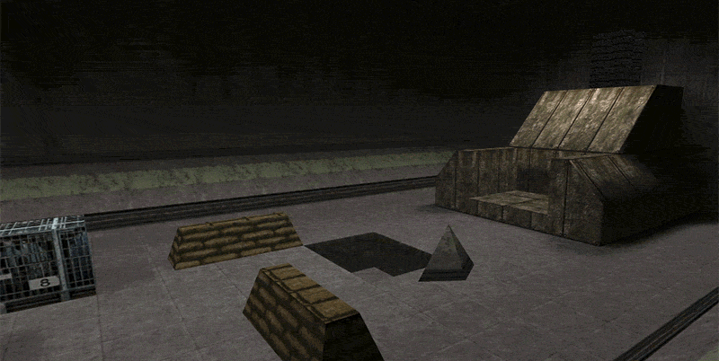

When you have your SMD's ready, create a QC compile script for your physics model. What I have here for the brick scene (I have the scale slightly larger than default 1.0 due to my last minute changes).
$modelname brickphys.mdl
$cd "."
$cdtexture "."
$scale 1.5
$cliptotextures
$body studio bakemesh
$sequence "idle" "bakemesh"
$sequence "scene" "bakeseq" fps 30 { event 1000 0 }
|
The first idle sequence is static at first frame so I used the reference SMD as the idle. The bakeseq is my animation, I keyed it at 30fps because thats what i had in the editor (default). Event 1000 at frame 0 is a "kill monster" event which marks the model as "dead" so it can no longer recieve any other inputs for whatever reason. If your sim starts late you can use the QC command "frame X X" (x being start frame and 2nd end frame to crop your animation) before the fps line.
Compiling model info with crowbar here if needed.
For the "TireScene" this is my QC. As you can see I have used the frame crop (my sim began a little later) and lowerfps and when I exported my scene I had a very long simulation so I used the fps retime as mentioned on the previous page.
$modelname tirescene.mdl
$cd "."
$cdtexture "."
$scale 1.0
$cliptotextures
$body studio tiremesh
$sequence "idle" "tiremesh"
$sequence "scene" "tireseq" frame 5 120 fps 20 { event 1000 0 }
|
(To skip to the "TireScene" setup click here.)
For a basic easy setup we go with Entity setup A:
Monster Generic --------------- Name: Brickwall Flags: "Not Solid" Model: models/mymodels/brickphys.mdl Scripted Sequence --------------- Name: brick_anim Flags: "Leave Corpse" Target Monster: Brickwall Action Animation: scene Idle animation: idle Func_wall_toggle (OPTIONAL) --------------- Name: brick_anim |

Use any way you want to trigger the "brick_anim" entity. In my example I used a func_button to trigger it. The optional func_wall_toggle is the same name as the scripted sequence so it toggles the same time as the animation sequence. The func_wall toggle acts as a collision for the wall that makes it passible after. If you don't need a toggle and just a simple collision object just make a simple "CLIP" brush around the model, otherwise have nothing.
If you need the model in a difficult place or a place that setup A does not work and gets the "yellow sprites: Stuck in wall" error,

...then go with setup B:
Entity setup B is the exact same setup only when creating the monster_generic it is put in an open space or floating in air, and the scripted sequence is in the place where the model should be.
The best way to do this is first make your monster_generic and place it where you need it. Then shift-drag to copy the monster_generic entity. Take the copy and move it in the air in an open area. Then select the original monster_generic you made and turn the entity into the Scripted Sequence entity. The only difference from setup A is add an additonal paramater for the scriped sequence which is "move to position" and set it to "instantaneous"

The final working result:

For the tirescene setup we create this monster_generic & scripted sequence:
Monster Generic --------------- Name: Tires Flags: "Not Solid" Model: models/mymodels/tirescene.mdl Animation Sequence (editor): 1 Scripted Sequence --------------- Name: tire_anim Flags: "Leave Corpse" Target Monster: Tires Action Animation: scene Idle animation: idle env_explosion (OPTIONAL) --------------- Name: tire_anim |
Position your monster_generic to your model origin location you had in your 3d editor to match just like what you have here. In my case I had 0 0 0 as the 3dsorigin which matches hammer origin (If you used 3dsmax you may need to set the monster_generic's Yaw rotation to 270). Using grid adjust I move the model into place and placing the yellow/red X which is the model origin at the world origin.
Use any way you want to trigger the "tire_anim" entity. In my example I used a func_button to trigger it. In this demonstration im keeping the tires passable.
If you need the model in a difficult place or a place that setup A does not work and gets the "yellow sprites: Stuck in wall" error, do the fix as I did above with the "BrickScene".
With the "Animation Sequence (editor): 1" paramater set you can now watch the scene play in the viewport and make any last minute assesments to see if you need to do a rebake or recompile.

The final scene
